git本地文件管理
安装git
安装git的命令如下：
sudo apt-get install git
安装完成后执行git命令,会显示git命令相关参数：
git
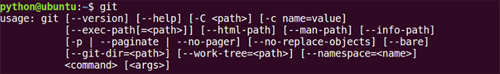
创建git管理文件夹
创建一个git_test文件夹，在该文件夹目录下执行如下命令，目录中会生成一个.git隐藏文件夹，这个文件夹就是针对git_test文件夹的版本库目录。
git init
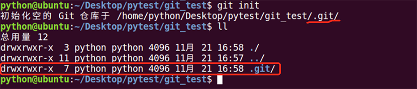
版本创建及查看状态
1、在git_test文件夹中创建一个code.txt文件，在code.txt中添加一行文本 2、使用git命令查看当前的状态
git status
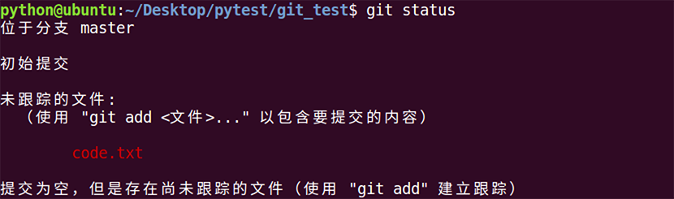 3、使用git add命令，将此文件加入暂存区:
git add code.txt
4、再查看当前的状态
5、使用git commit命令，将文件加入仓库区，此时可以创建文件的一个版本
git commit -m '版本1'
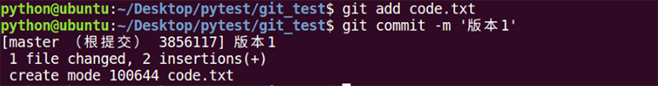
6、再查看当前的状态
查看历史及版本回退
1、使用git log查看版本记录
git log
2、在code.txt文件中再添加一行，然后使用之前的命令再创建一个版本

3、想退回到某个版本，可以使用如下命令：
git reset --hard HEAD^
其中HEAD表示当前最新版本，HEAD^表示当前版本的前一个版本,HEAD^^表示当前版本的前前个版本，也可以使用HEAD~1表示当前版本的前一个版本,HEAD~100表示当前版本的前100版本。 如果想回到版本1，可以使用如下命令： 执行命令后使用git log查看版本记录，发现现在只能看到版本1的记录，cat code.txt查看文件内容，发现现在只有一行，也就是第一个版本中code.txt的内容。
4、假如我们现在又想回到版本2，这个时候怎么办？可以使用如下命令：
git reset --hard 版本号
从上面的文本信息中可以看到版本2的版本号为如下： 这时，只需要复制一部分版本号就可以了，执行下面的命令： 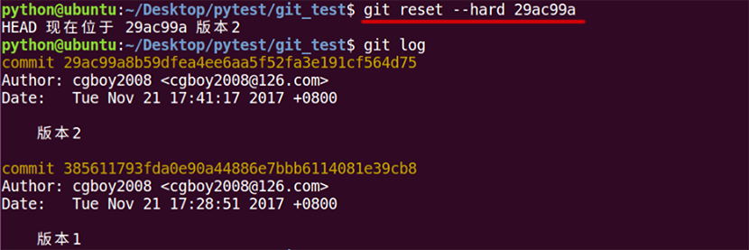 现在发现版本2又回来了。可以cat code.txt查看其里面的内容如下：
5、如果再回退到版本1，关掉终端，再打开，这个时候看不到版本2的版本号，这个时候想回到版本2，该怎么办呢？这个时候可以执行如下命令查看每个操作记录：记录的前面是版本号：
git reflog
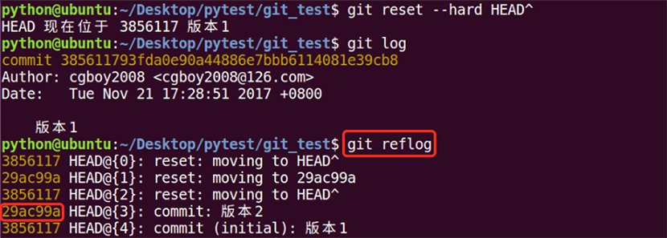 这个时候就可以看到版本号了，执行第7步的命令，就可以回到版本2了：
管理修改
git管理的文件的修改，它只会提交暂存区的修改来创建版本。
1、在code.txt中增加一行，然后用git add命令提交到暂存区。
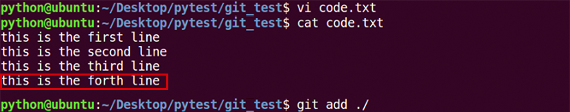
然后再到code.txt中增加一行。
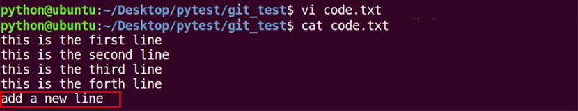
接着直接用git commit命令提交到仓库区，然后用git status命令来查看当前状态，发现code.txt文件还有修改未提交，也就是第二次修改的没有提交。
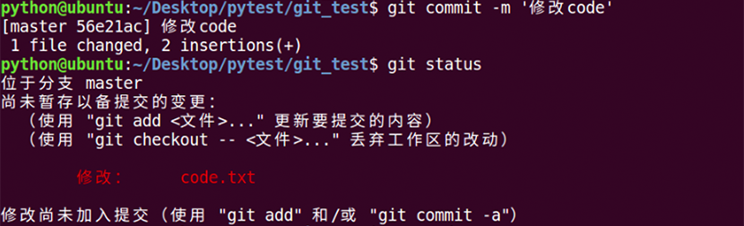
2、如果想撤销第二次工作区的修改，可以使用如下命令：
git checkout -- <文件>
接着使用git status命令查看状态，发现工作区干净了，没有提交，也就是文件回到了第一次修改的状态 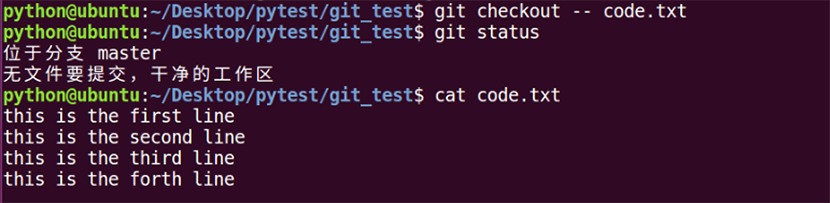
3、如果修改的内容加入到暂存区，应该如何修改呢？接下来再增加一行，然后用git add命名加入到暂存区。 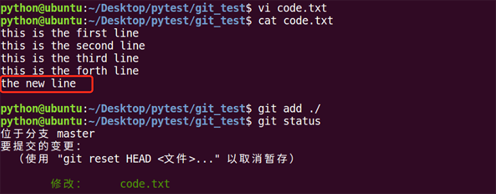 git中的提示告诉我们，可以使用如下命令，将暂存区的修改撤销掉，重新放回工作区
git reset HEAD <文件>
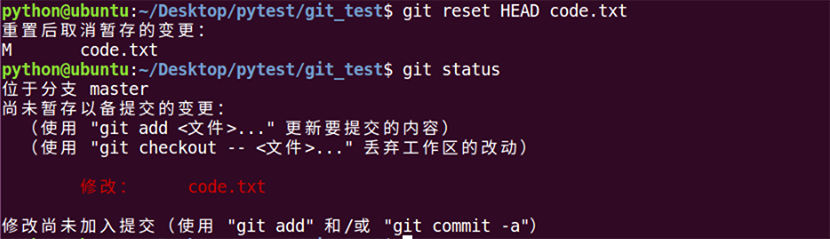 接着如果想放弃工作区的修改，可以使用第2部的命令，撤销工作区文件的修改
5、如果修改的内容加入到了暂存区，又加入到了仓库区，这个时候想撤销该怎么办呢？这个时候我们可以使用版本回退，回退到上一个版本。
总结：
- 场景1：当你改乱了工作区某个文件的内容，想直接丢弃工作区的修改时，用命令git checkout -- file。
- 场景2：当你不但改乱了工作区某个文件的内容，还添加到了暂存区时，想丢弃修改，分两步，第一步用命令git reset HEAD file，就回到了场景1，第二步按场景1操作。
- 场景3：已经提交了不合适的修改到版本库时，想要撤销本次提交，参考版本回退一节。
文件对比
1、将code.txt文件中新增加一行，此时，如果想比较工作区文件和当前最新版本文件的差异，应该怎么做呢？可以执行如下命令：
git diff HEAD -- <文件>
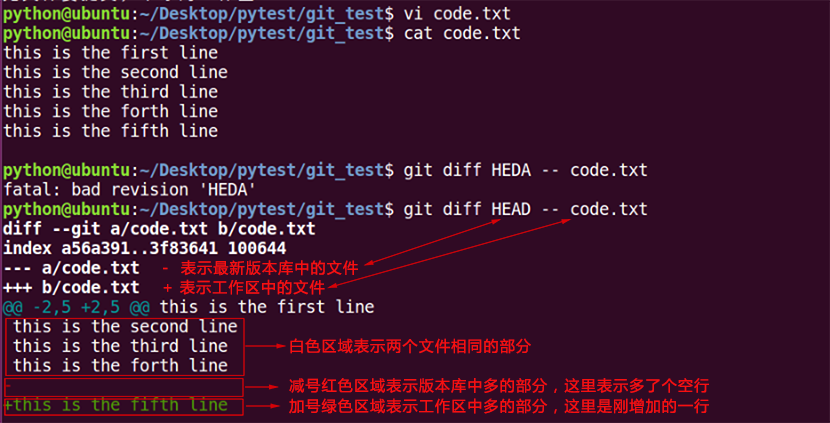 2、如果想比较版本库中两个版本的不同，可以使用如下命令来比较：
git diff HEAD HEAD^ -- <文件>
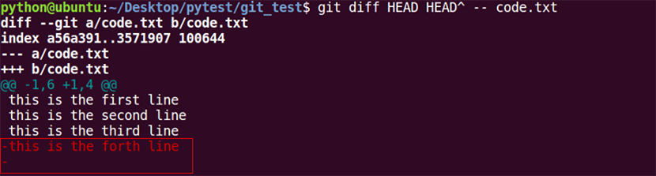 可以看出，最新版本比前一个版本多个一行文字和一个空行
删除文件
1、如果要删除文件，可以直接在文件夹里面删除，直接删除文件只是反应在工作区的修改，如果想提交删除修改，需要先执行add再执行commit，而使用git命令删除，会将删除的修改信息直接存到暂存区，git删除命令为：
git rm <文件>
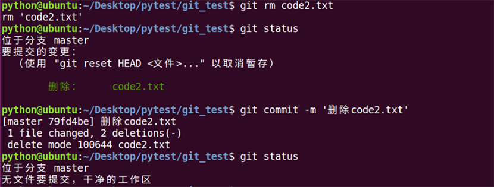 如果想确认删除，可以提交删除修改到仓库区。
2、如果是删错了，在暂存区可以使用‘git reset HEAD <文件>...’命令，撤销文件的删除，如果已提交仓库区，可以使用版本回退回到删除之前的版本，如果想找回单个删除文件，可以使用‘git checkout <版本号> <文件名>’，将删除的找回到暂存区，再提交仓库区就可以了。